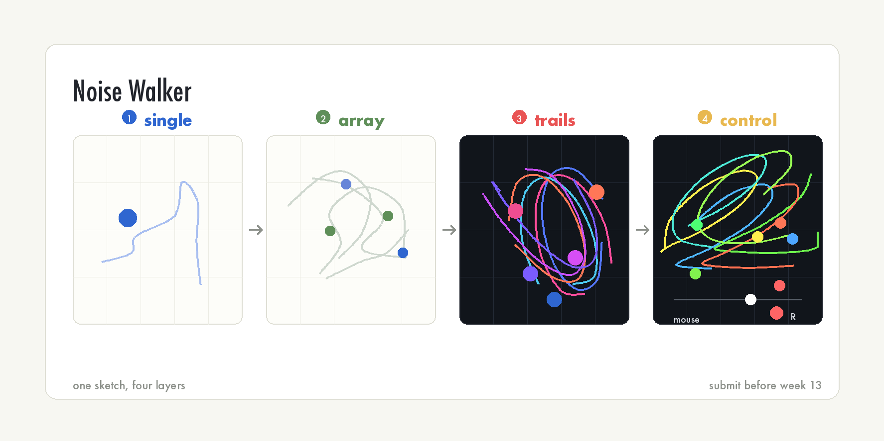
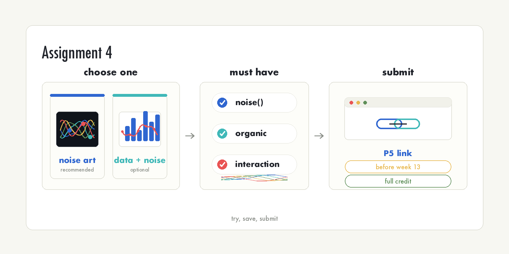

12주차: 노이즈와 자연스러운 움직임 (3교시 · 학생용)
| 항목 | 링크 |
|---|---|
| 강의 아웃라인 | week-12-outline |
| 강사용 교안 | week-12-period3-content |
| 이전 교시 학생용 | week-12-period2-student |
이번 시간이 끝나면 다음을 할 수 있습니다. - noise()로
유기적인 움직임을 가진 작품을 제작할 수 있습니다. - 1D 노이즈 워커를
배열(7주차)로 다룰 수 있습니다. - 실습과제 4의 기초를 완성할 수
있습니다.
노이즈로 유기적 작품 만들기
실습 개요
이번 시간에는 한 작품을 단계별로 직접 만듭니다 — 노이즈 워커 작품입니다. 각 단계는 직전 코드 위에 기능을 더하는 방식입니다. 한 단계를 완료하지 못해도 다음 단계 코드를 참고해 이어갈 수 있습니다.

실습 환경 설정
- p5.js Web Editor에 접속해 새 스케치를 만듭니다.
- 스케치 이름을
week12-noise-walker정도로 저장합니다. - 아래 스타터 코드를 붙여넣고 실행합니다. 원 하나가 떠다니면 준비 완료입니다.
let xOff = 0;
let yOff = 1000;
function setup() {
createCanvas(400, 400);
}
function draw() {
background(220);
let x = noise(xOff) * width;
let y = noise(yOff) * height;
noStroke();
fill(100, 150, 255);
ellipse(x, y, 30, 30);
xOff += 0.01;
yOff += 0.01;
}1단계 — 노이즈 워커 하나
스타터 코드가 곧 1단계입니다. 실행해서 원이 화면을 부드럽게 흐르면 1단계 완료입니다. 1교시 ‘떠다니는 원’ 예제와 같은 코드입니다.
기대 결과: 파란 원 하나가 직선이 아니라 부드러운 곡선 경로로 움직입니다.
힌트: - 증가값은 0.005~0.02 사이로 둡니다.
작을수록 천천히 움직입니다. - xOff와 yOff는
반드시 다른 값에서 출발합니다(예: 0과 1000). 같으면 대각선으로만
움직입니다. - let xOff / let yOff는
draw() 밖에 선언합니다. 안에 두면 매
프레임 리셋돼 움직이지 않습니다.
실행이 되면 증가값을 0.05로 바꿔 실행해 보고, 다시
0.01로 돌려놓습니다. 움직임 차이를 직접 비교하는 것이
1단계의 목표입니다.
2단계 — 워커를 여러 개로
워커 하나를 여러 개로 늘립니다. 7주차에서 배운 배열과
for문을 씁니다.
draw()밖에 워커 배열을 만듭니다:let walkers = [];setup()에서for문으로 워커 객체를 여러 개push합니다. 워커마다xOff,yOff시작값을 다르게 둡니다.draw()에서for (let w of walkers)로 각 워커를 그립니다.
let walkers = [];
function setup() {
createCanvas(400, 400);
for (let i = 0; i < 5; i++) {
walkers.push({
xOff: i * 1000,
yOff: i * 1000 + 500
});
}
}
function draw() {
background(220);
for (let w of walkers) {
let x = noise(w.xOff) * width;
let y = noise(w.yOff) * height;
noStroke();
fill(100, 150, 255);
ellipse(x, y, 30, 30);
w.xOff += 0.01;
w.yOff += 0.01;
}
}기대 결과: 5개의 원이 각자 독립적인 경로로 떠다닙니다.
힌트: - 워커 i의 시작 오프셋을 i * 1000으로
두면 서로 충분히 떨어져 경로가 겹치지 않습니다. - 모든 워커가 똑같이
움직인다면 오프셋 시작값이 전부 같다는 뜻입니다. i * 1000
부분을 확인합니다.
3단계 — 유기적 질감 입히기
색과 잔상을 입혀 작품으로 만듭니다. HSB 모드에서 색을 노이즈로 정하고, 배경을 반투명하게 깔아 궤적을 남깁니다.
setup()에colorMode(HSB, 360, 100, 100, 100)을 추가합니다.draw()의background(220)을 반투명background(0, 0, 12, 20)으로 바꿉니다. 이전 프레임이 옅게 남아 궤적이 생깁니다.- 워커마다 색 오프셋(
hueOff)과 크기 오프셋(sizeOff)을 추가해, 색과 크기도 노이즈로 변하게 합니다.
let walkers = [];
function setup() {
createCanvas(400, 400);
colorMode(HSB, 360, 100, 100, 100);
background(0, 0, 12);
for (let i = 0; i < 5; i++) {
walkers.push({
xOff: i * 1000,
yOff: i * 1000 + 500,
hueOff: i * 1000 + 900,
sizeOff: i * 1000 + 1400,
baseHue: (i * 55) % 360
});
}
}
function draw() {
background(0, 0, 12, 20); // 반투명 배경 → 잔상
for (let w of walkers) {
let x = noise(w.xOff) * width;
let y = noise(w.yOff) * height;
let hue = (w.baseHue + noise(w.hueOff) * 60) % 360;
let size = map(noise(w.sizeOff), 0, 1, 10, 40);
noStroke();
fill(hue, 80, 100, 70);
ellipse(x, y, size, size);
w.xOff += 0.01;
w.yOff += 0.01;
w.hueOff += 0.01;
w.sizeOff += 0.02;
}
}기대 결과: 색과 크기가 천천히 변하고, 반투명 배경 덕분에 부드러운 궤적이 화면에 쌓입니다.
힌트: - 색·크기에 노이즈를 쓰려면 위치 오프셋과 다른
오프셋이 필요합니다. hueOff, sizeOff를 따로
둡니다. - 크기는 noise()가 0~1이라 그대로 쓰면 너무
작습니다. map(noise(sizeOff), 0, 1, 10, 40)으로 키웁니다. -
잔상이 너무 빨리 사라지면 background()의 마지막 값(20)을 더
작게, 너무 안 지워지면 더 크게 조절합니다.
4단계 — 인터랙션 추가
마지막으로 마우스·키보드 인터랙션을 더합니다. 4주차에서 배운
mousePressed(), keyPressed()를 씁니다. 완성
코드는 아래 완성 예제에 모두 들어 있습니다.
draw()에서mouseX로 증가값을 정합니다:let step = map(constrain(mouseX, 0, width), 0, width, 0.002, 0.08);— 그리고 워커 오프셋을0.01대신step만큼 증가시킵니다. (constrain()은 마우스가 캔버스 밖으로 나가도step이 의도하지 않은 값이 되지 않게 막아 줍니다.)mousePressed()함수를 추가해, 클릭하면 워커를 하나 더push합니다.keyPressed()함수를 추가해, 특정 키를 누르면noiseSeed()로 노이즈 패턴을 새로 생성합니다.
기대 결과: 마우스를 왼쪽에 두면 천천히, 오른쪽에 두면 빠르게 흐릅니다. 클릭하면 워커가 늘고, 키를 누르면 노이즈 패턴이 새로 시작됩니다.
힌트: - mousePressed(), keyPressed()는
draw() 밖에 별도 함수로 작성합니다.
draw() 안에 쓰면 동작하지 않습니다. - 워커를 추가할 때는
2·3단계에서 만든 워커 객체와 똑같은 모양으로
walkers.push({ ... }) 합니다. -
noiseSeed(숫자)를 부르면 노이즈 패턴이 전체적으로 바뀝니다.
같은 숫자를 넣으면 같은 패턴이 다시 나옵니다.
체크포인트
작품을 제출하기 전에 스스로 확인합니다.
선택 확장 과제
4단계까지 끝났고 시간이 남으면 다음 중 하나를 시도해 봅니다.
- Flow Field 적용 — 2교시 사례 2를 참고해, 워커가 노이즈 방향장을 따라 흐르게 만들기
- 2D 노이즈 배경 — 2교시 사례 1의 컬러 텍스처를 배경으로 한 겹 깔기
- 풍경 합성 — 1교시의 1D 풍경 실루엣을 배경으로 합성하기
- 질감 조절 —
noiseDetail(octaves, falloff)로 움직임의 거칠기를 바꿔 보기
완성 예제 (전체 코드)
4단계까지 모두 합친 완성형입니다. 워커 6개로 시작하고, 클릭하면
늘어나고, 마우스로 속도를 조절하고, R 키로 노이즈 패턴을
새로 생성합니다.
// 12주차 3교시 완성 예제 — 노이즈 워커 작품
let walkers = [];
let step = 0.01;
function setup() {
createCanvas(400, 400);
colorMode(HSB, 360, 100, 100, 100);
background(0, 0, 12);
for (let i = 0; i < 6; i++) {
walkers.push(makeWalker(i));
}
}
function makeWalker(i) {
return {
xOff: i * 1000,
yOff: i * 1000 + 500,
hueOff: i * 1000 + 900,
sizeOff: i * 1000 + 1400,
baseHue: (i * 55) % 360
};
}
function draw() {
background(0, 0, 12, 20); // 반투명 배경 → 잔상
step = map(constrain(mouseX, 0, width), 0, width, 0.002, 0.08); // 마우스 좌우로 속도 조절
for (let w of walkers) {
let x = noise(w.xOff) * width;
let y = noise(w.yOff) * height;
let hue = (w.baseHue + noise(w.hueOff) * 60) % 360;
let size = map(noise(w.sizeOff), 0, 1, 10, 40);
noStroke();
fill(hue, 80, 100, 70);
ellipse(x, y, size, size);
w.xOff += step;
w.yOff += step;
w.hueOff += step;
w.sizeOff += step * 2;
}
noStroke();
fill(0, 0, 100);
textSize(11);
text("마우스 좌우: 속도 | 클릭: 워커 추가 | R: 패턴 새로고침", 10, height - 12);
}
function mousePressed() {
walkers.push(makeWalker(walkers.length)); // 클릭: 워커 추가
}
function keyPressed() {
if (key === 'r' || key === 'R') {
noiseSeed(floor(random(10000))); // R: 노이즈 패턴 초기화
background(0, 0, 12);
}
}이것이 4단계까지 모두 합친 완성형입니다. 수업 시간 안에 모두 끝내지 못해도 괜찮습니다. 1·2단계까지의 결과물도 수업 중 성과로 볼 수 있지만, 최종 제출 전에는 인터랙션을 1개 이상 추가해야 합니다.
실습과제 4 안내

| 항목 | 내용 |
|---|---|
| 과제명 | 데이터 시각화 또는 노이즈 활용 작품 |
| 제출 기한 | 13주차 수업 전까지 |
| 제출 방식 | P5.js Web Editor 링크 공유 |
| 필수 요구사항 | noise() 활용 + 유기적 움직임/패턴 + 인터랙션 1개
이상 |
| 평가 | 제출 완료 시 만점 — 완성도보다 직접 시도하고 제출하는 것이 중요 |
오늘 만든 작품을 그대로 발전시켜 제출해도 됩니다. 핵심은
noise()를 직접 써 본 경험입니다. 데이터 시각화 방향으로
가고 싶다면 11주차에서 쓰던 JSON·CSV 데이터에 노이즈 효과를 더해 제출할
수 있습니다.
마무리
스케치를 저장합니다 (Ctrl+S, 맥은 Cmd+S).
실습과제 4는 13주차 수업 전까지 P5.js Web Editor 링크를 제출하면 만점입니다. 완성도보다 직접 시도하고 제출하는 것이 중요합니다.
다음 시간 예고
2교시 Flow Field에서 점 200개가 방향을 따라 흐르는 것을 보았습니다. 그 점들은 수명 없이 계속 움직였고, 화면 밖으로 나가면 새 자리에서 다시 시작했습니다.
13주차에서는 그 점들에 수명을 줍니다 — 태어나고, 움직이고, 점점 투명해지다가 사라집니다. 이것이 파티클 시스템이며, 연기·불꽃·눈·비 같은 효과를 만들 수 있습니다. 오늘의 노이즈와 다음 주의 파티클은 기말 프로젝트의 중요한 재료가 됩니다.